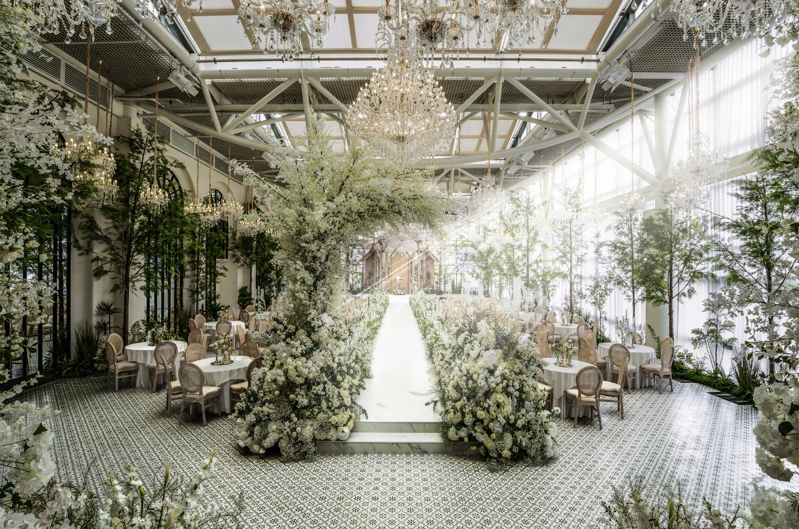
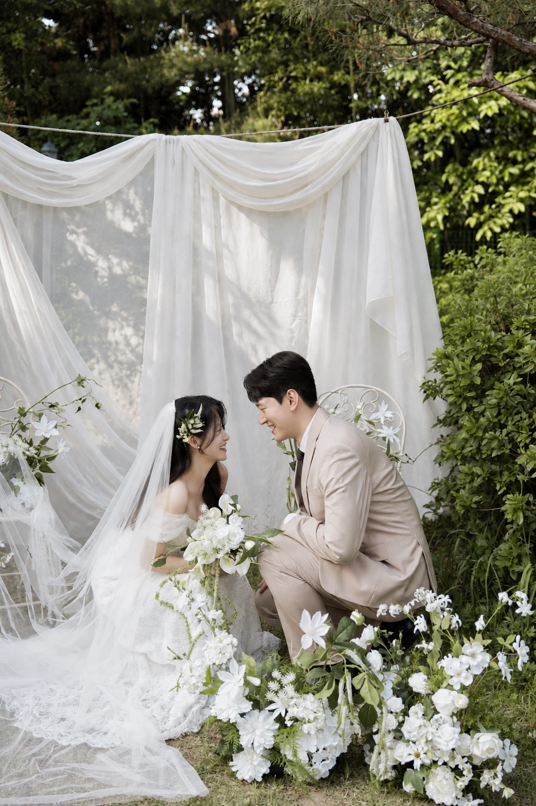
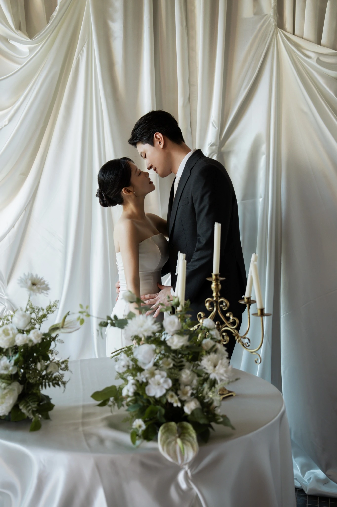
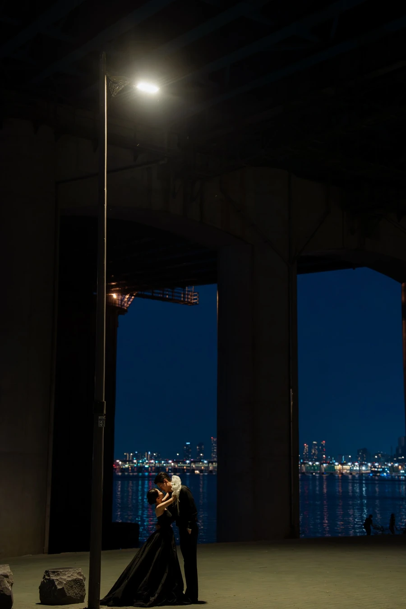
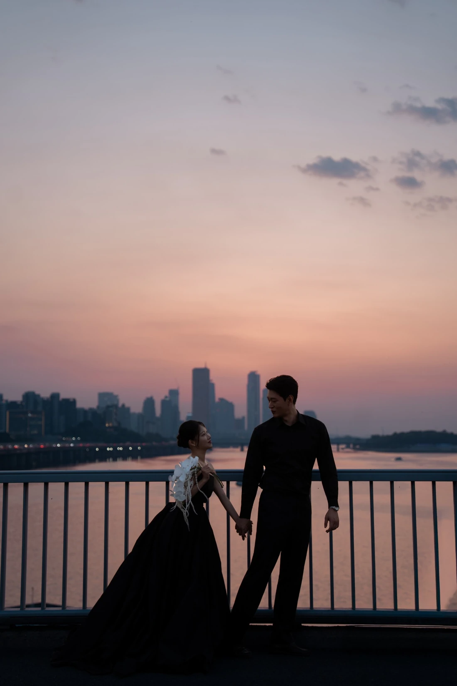
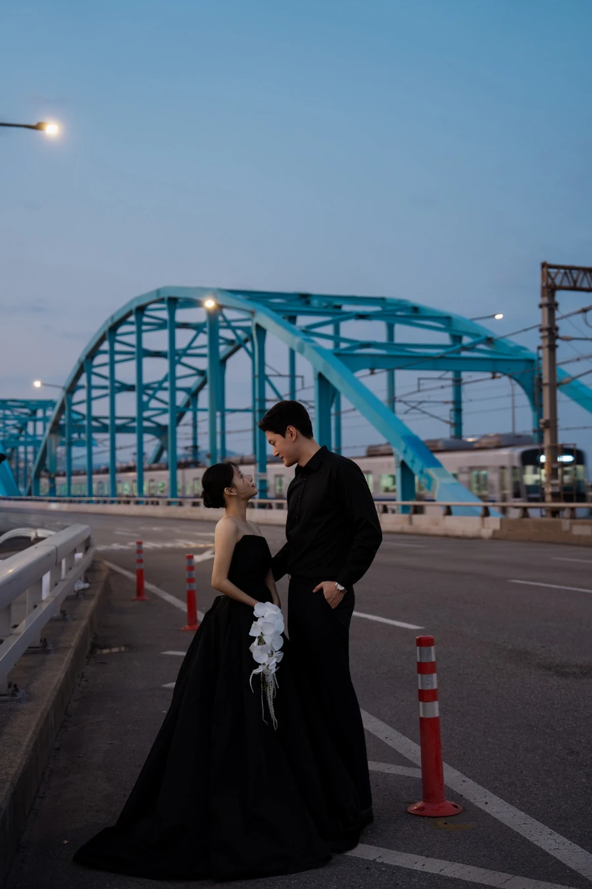
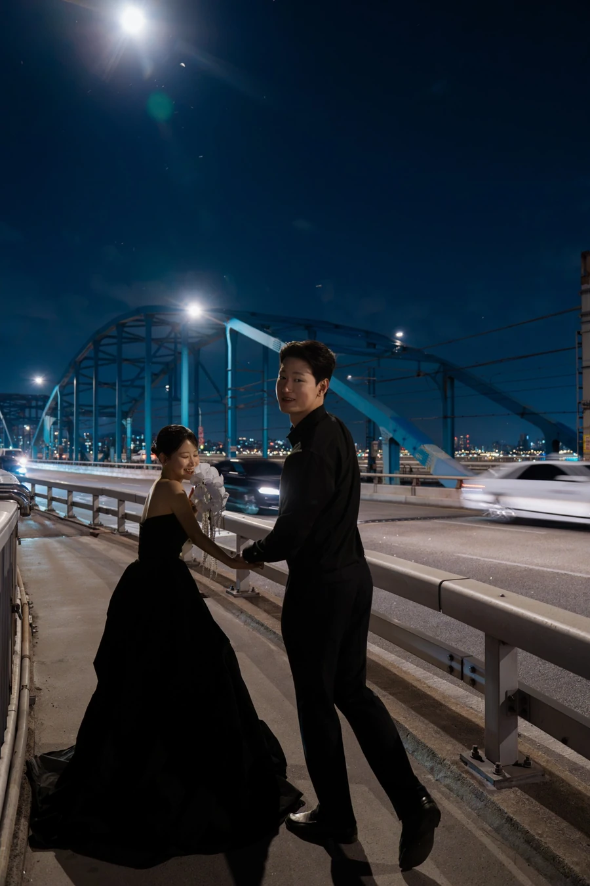

2027. 01. 02 · SAT · 5:20 PM
01 / INVITATION
서로의 하루에 가장 가까운 사람이 되어
같은 곳을 바라보며 걸어가려 합니다.
소중한 날, 함께해 주시면 감사하겠습니다.
병운 · 주현
황영대 · 임혜영의 장남 병운
염윤종 · 안광숙의 장녀 주현
02 / THE WEDDING DAY
소중한 분들과 함께하고 싶은 날,
2027년 1월 2일 토요일 오후 5시 20분
03 / WEDDING LOCATION

예식 장소
경기도 성남시 분당구 양현로 322 8층
건물 주차장 이용 가능. 무료 주차 시간 등 상세 안내는 예식장 최종 확인 후 기재할 예정입니다.
04 / PHOTOS






05 / WITH GRATITUDE
소중한 마음만으로도
저희에게는 큰 힘이 됩니다.
전해주시는 따뜻한 마음에 감사드립니다.
마음을 전해주셔서 진심으로 감사드립니다.
BYEONGWOON
JUHYUN
소중한 마음으로
함께해 주셔서
진심으로 감사드립니다.